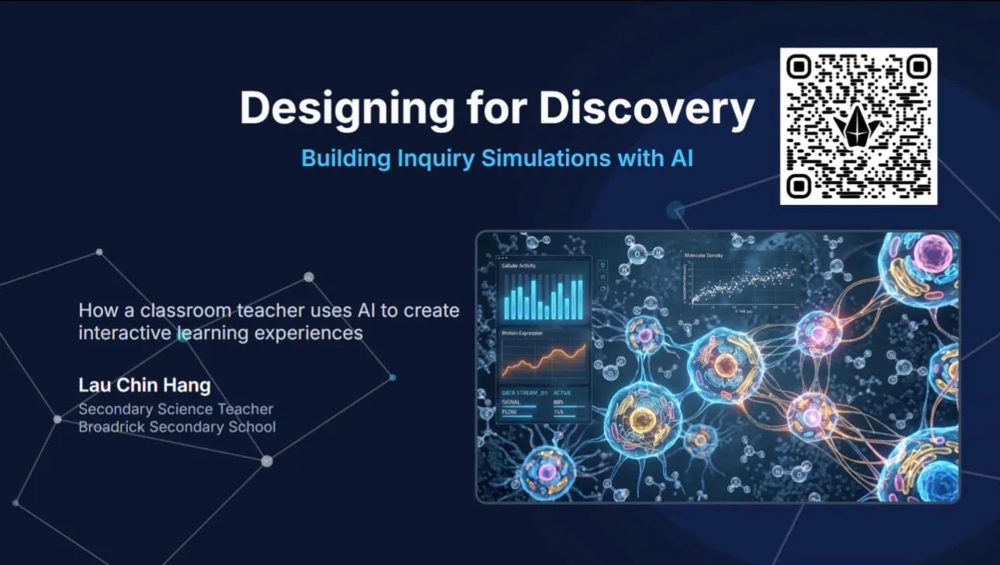
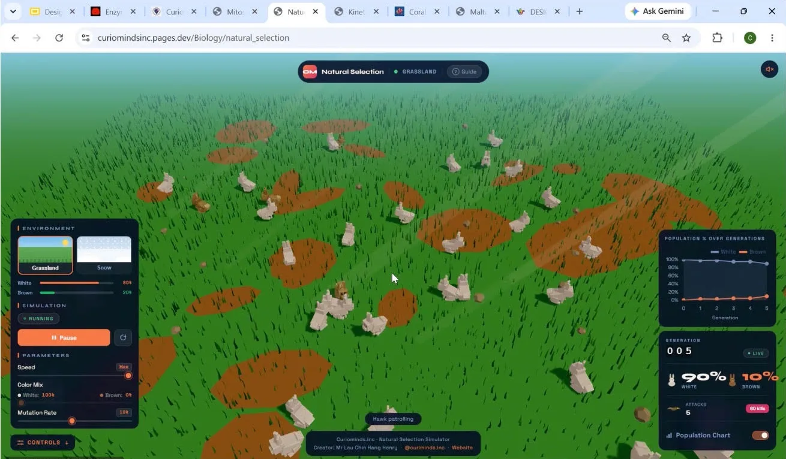
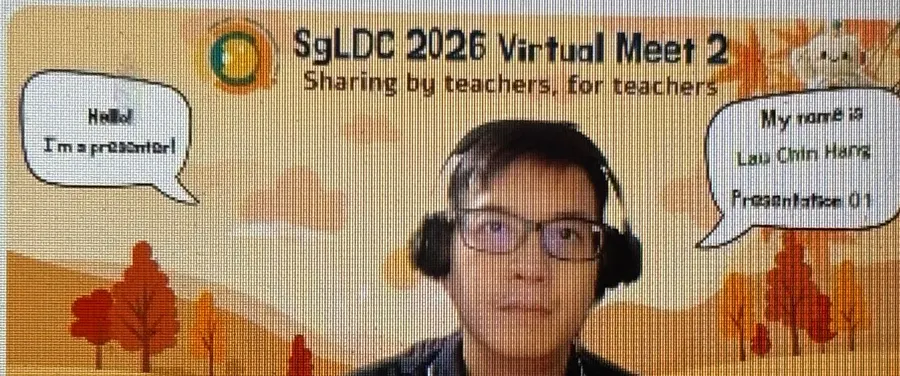
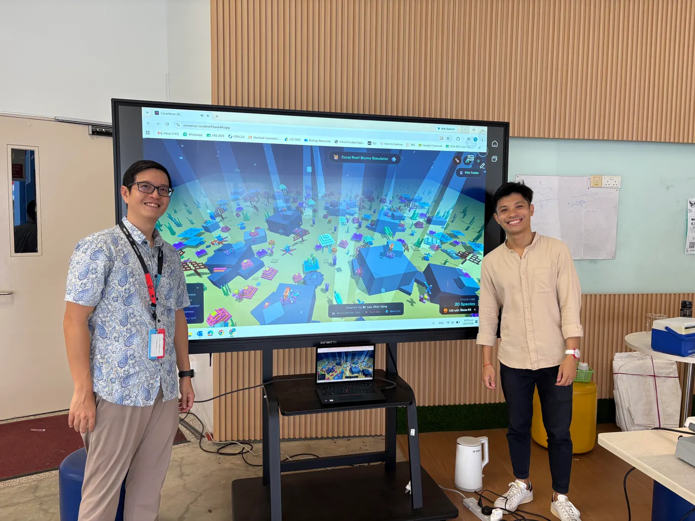
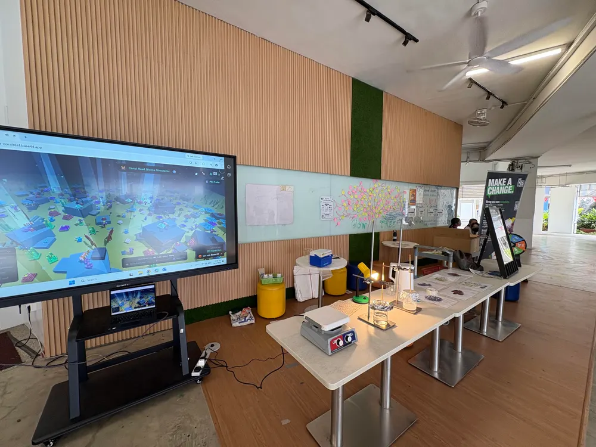
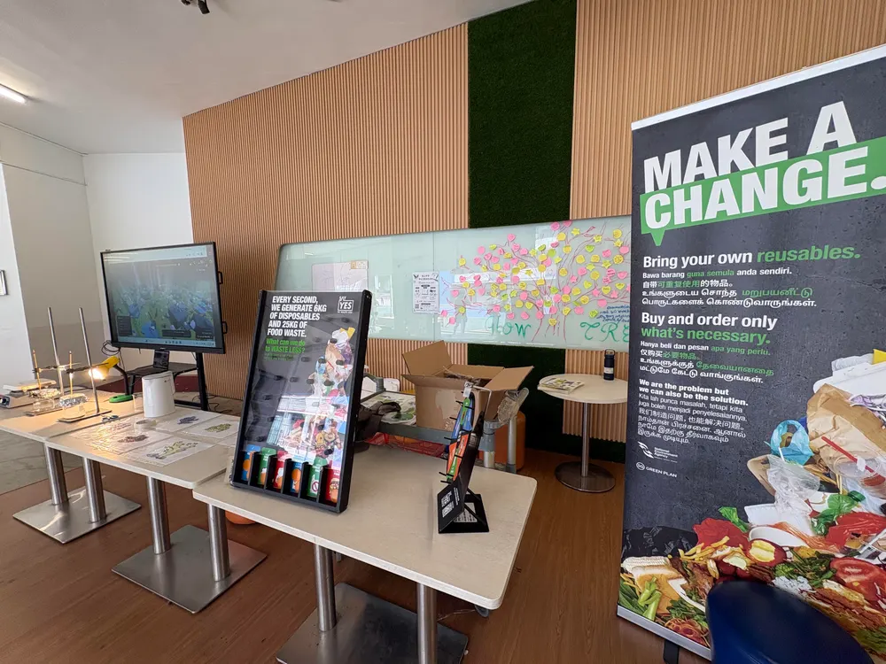
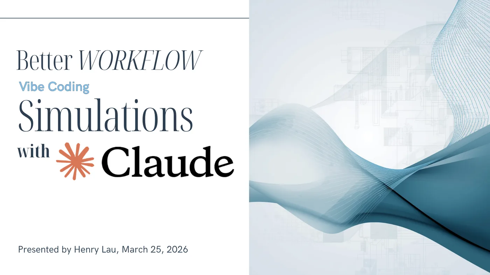

Educator Sharing
I was invited to share how I use AI-built simulations to teach science. Simulations make conceptual understanding easier because they show processes that can't be shown in a school lab, such as natural selection over generations or what happens inside a cell.
I took over 40 participants from schools across Singapore through my approach. We covered how to design for inquiry and how to use AI to build simulations, including adapting them for other subjects. The session ended with a hands-on segment and a live demo of my Natural Selection simulation.



Participant Feedback
Presenter is very interactive and the plentiful resources help cater to the needs of his audience! … Hence I was engaged every minute! Love this padlet-resource style of presenting!Teacher
It really got me thinking deeper on the purpose and processes behind simulation creation.Teacher
I don't teach science, but I think it is a great tool to create simulation for learning.Teacher, non-science
Thank you Mr Lau for his generous sharing, especially the part on using AI to create prompts.Teacher
Very insightful and appreciate the hands-on portion.Teacher
Very encouraging and useful method for building simulations.Teacher
Very interesting sharing. Hope I can create one simulation by myself.Teacher Leader
Student Programme
Green Quest is a student-led programme that raises awareness of environmental problems in school. I designed the programme, and with a team of teachers trained more than 20 student ambassadors to run it. They ran a recess booth during every recess, sharing with students across the whole school.
The ambassadors taught their peers about coral bleaching: why it happens and what it does to a reef ecosystem.
Explore the reef
Ambassadors used my Coral Reef Biome simulation to show how the reef works and why it bleaches.
Watch coral bleach
A coral display printed in thermochromic ink loses its colour as it heats up, showing bleaching as it happens.
Connect to global warming
A hands-on demonstration links rising temperatures to what students had just seen.



In-School Sharing
Before presenting at SgLDC, I shared my workflow with my own science department. I showed fellow teachers how to work with AI to build and refine interactive simulations for their lessons. This in-school session helped shape the approach I later presented to educators nationally.

See the Simulations for Yourself
Every simulation shown here is free to use in class, with no login and no setup.